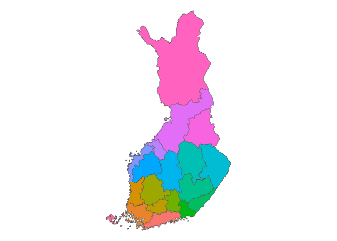

This package contains some data sets from finnish statistial institute.
Installation
You can install the development version of rfinstats from GitHub with:
# install.packages("devtools")
devtools::install_github("StranMax/rfinstats")
head(taantuvat)
#> # A tibble: 6 × 5
#> kunta vaesto kokmuutos_2010_2022 suht_muutos_2010_2022 luokka
#> <chr> <dbl> <int> <dbl> <fct>
#> 1 Akaa 16811. -385 -2.29 Hieman taantuva
#> 2 Alajärvi 9876. -1390 -14.1 Voimakkaasti taant…
#> 3 Alavieska 2630. -329 -12.5 Voimakkaasti taant…
#> 4 Alavus 11831 -1484 -12.5 Voimakkaasti taant…
#> 5 Asikkala 8268. -537 -6.49 Taantuva
#> 6 Askola 4950. -68 -1.37 Hieman taantuva
taantuvat_sf <- left_join(taantuvat, kunnat) |> st_as_sf()
#> Joining with `by = join_by(kunta)`
ggplot() +
geom_sf(data = taantuvat_sf, aes(fill = luokka)) +
theme_void()
aluejaot_sf <- left_join(aluejaot, kunnat) |> st_as_sf()
#> Joining with `by = join_by(id, kunta)`
aluejaot_sf |>
group_by(Maakunta) |>
summarise(n = n(), do_union = TRUE) |>
ggplot() +
geom_sf(aes(fill = Maakunta), show.legend = FALSE) +
theme_void()